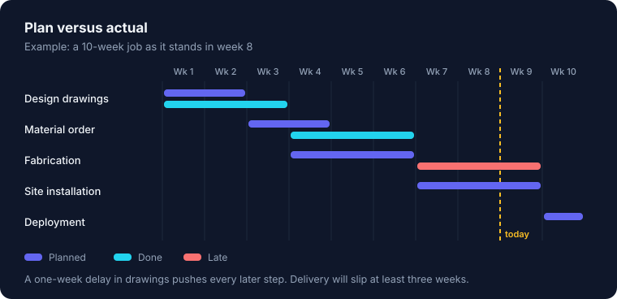
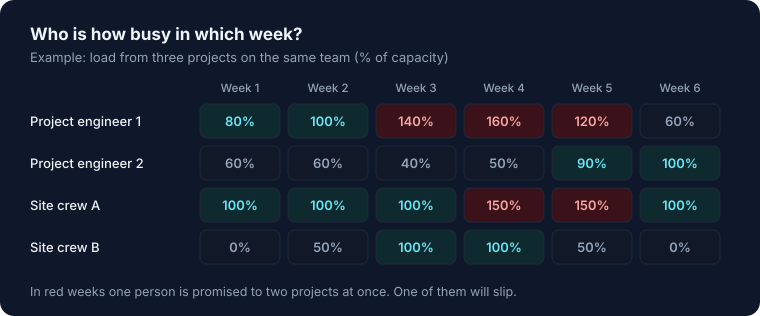

Project Management
When does project management software become necessary?
In companies doing engineering, contracting and installation work, the project plan is usually prepared once, at the start of the job. A nice schedule is produced in Excel, shown at a meeting, then put in a folder and never opened again. The job still gets done, because the project manager keeps everything in their head. When three or four jobs are running at the same time, this method wears out both the person and the company.

Why does the plan end up on the shelf?
Keeping an Excel schedule up to date is a job in itself. News comes in from the site, someone opens the file, shifts the dates and emails the new version to everyone. Two weeks later four different versions are in circulation and nobody knows which one is right. After a while the person updating the schedule gives up too.
From then on, the status of the project is learned by phone. The site is asked "where are we?" and the answer comes back "it'll be finished tomorrow". The same answer can come for three weeks, because nowhere is it written what percentage of the work is done.
It has consequences on the customer side too. When a progress invoice is due, people try to piece together from documents who did how much work, which materials were delivered to site and which extra work the customer approved. Every missing document means the invoice slips by a month.
How does a small delay grow?
In a project, tasks depend on each other. When drawing approval is late, the material order is late; when materials arrive late, fabrication slips; when fabrication slips, the site crew waits idle or is sent to another job. A one-week slip at the start shows up as three or four weeks at delivery.

The chain itself is unavoidable; something slips on every project. The problem is noticing the slip late. If the plan is not up to date, you learn of the delay two weeks before the delivery date, and at that point all you can do is pay overtime and ask the customer for more time.
One team, three projects
In a mid-sized company, as the number of projects grows the real squeeze is on people. The same engineer is doing drawings for three projects; the same site crew has been promised to two sites. Each project looks reasonable on its own; put them side by side and it turns out that in some weeks one person is expected to do the work of two.

You can keep this table in Excel, but it has to be recalculated by hand every time a project changes. Nobody does it. The clash comes to light on the day the crew cannot get to the site.
What does project management software do?
Essentially it keeps the plan alive. Tasks, their durations and their dependencies are entered once. When a task is late, the dates of the tasks that depend on it move automatically and the new delivery date is visible straight away.
Progress is entered from the field. On their phone the crew leader marks the work done that day, adds photos and notes any missing material. The person in the office does not have to call anyone to find out where things stand.
Documents are collected under the project: the contract, the latest version of the drawings, correspondence with the customer, approved extra work, handover reports. When it is time for a progress invoice, you know where to look.
Finally, all projects sit side by side on one screen. Which one is on time, which is running late, who is overloaded in which week — you see it at a glance. With this screen, the weekly meeting does not spend time asking for status; it goes straight to what needs to be done.
At what size does it become necessary?
For a five-person team with a single project, a well-kept Excel file is enough. From what we have seen, it stops being enough in these situations:
- When more than three projects are running at the same time.
- When the same people or crews work on more than one project.
- When the only way to find out what is happening on site is to phone.
- When progress invoices are delayed because the documents cannot be gathered.
- When you do not know how many projects were delivered late last year.
What to watch out for when starting
The most common mistake is trying to enter every detail into the system from day one. Nobody can keep a three-hundred-line task list up to date. Start with fifteen to twenty main tasks per project and add detail as the need arises.
Second, entering data from the field has to be very easy. You cannot expect the crew leader to sit down at a computer every evening. Information that cannot be entered in two taps on a phone will, after a while, not be entered at all.
Third, start with a new project. Transferring a half-finished job into the system is laborious and puts the team off from the start. Open the next job in the system and let the old ones finish the way they are.
Which tool to use is a decision that comes after this. There are off-the-shelf project management tools, project modules in ERP systems and solutions written for a particular company. We look first at how the company runs its projects and recommend the tool accordingly.
Frequently asked questions
We have a schedule in Excel. Why isn't it enough?
Excel is fine for drawing up the plan. Where it struggles is keeping the plan up to date and seeing more than one project at the same time. As long as the file sits on one person's computer, information from the field does not reach it.
Will the field team enter data on their phones?
They will if there is little to enter and the screen is simple. In our experience, taking a photo and uploading it is the step that is adopted most easily, because the team is already taking photos and sending them on WhatsApp.
An off-the-shelf tool or custom software?
If your work is close to a standard flow, an off-the-shelf tool is faster and cheaper. If you need a link to progress billing, quoting and inventory, or the way you work is particular to you, a tailored system lasts longer.
Let’s bring your business under control.
We map the path of one of your orders together and see where time and money are lost.
Contact details